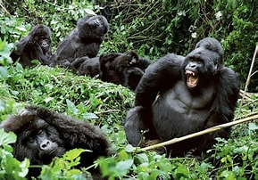

Mountain gorillas are large, powerful primates that live in the high forests in Central Africa. They are a subspecies of the eastern gorilla and are known for their thick black fur, which helps them survive in cold mountain climates. Mountain gorillas live in family groups led by a dominant male called a silverback, who protects and guides the group. They mainly eat leaves, stems and fruits. They also spend much of their day feeding and resting. Although they were once critically endangered, conservation efforts have helped increase their population, making them an important symbol of wildlife protection.
Find out more